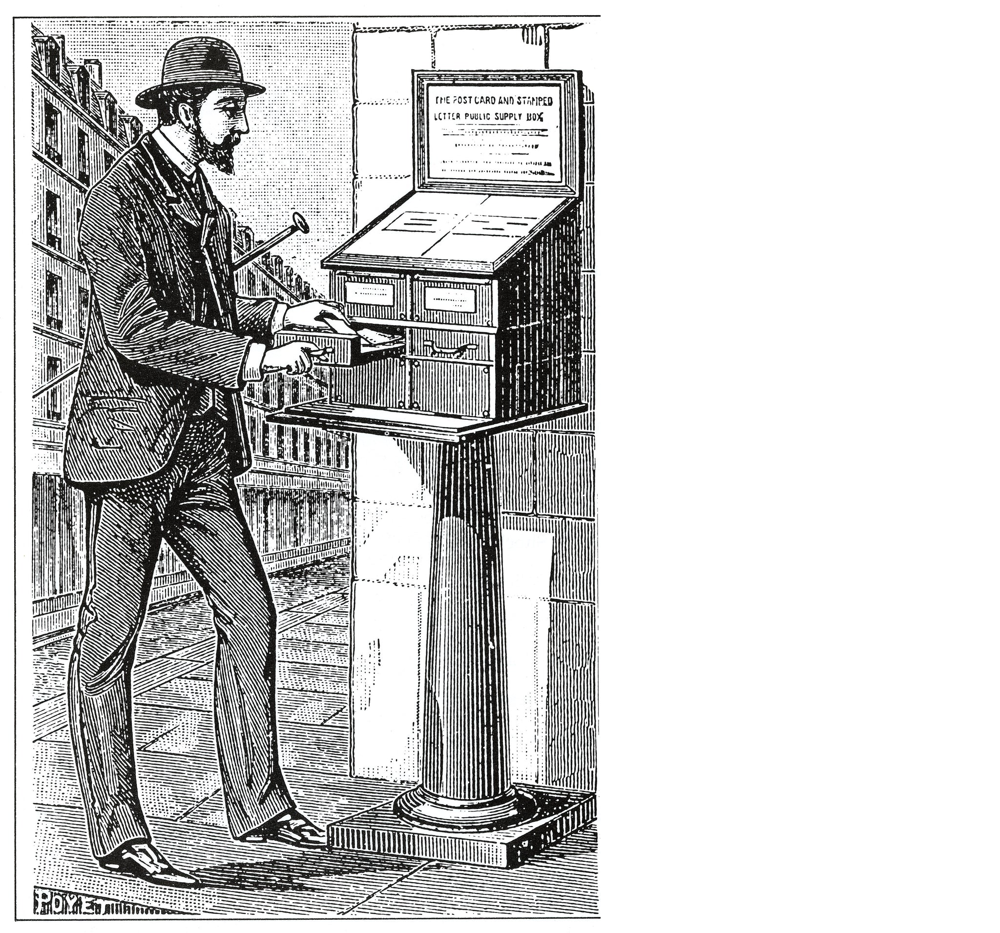
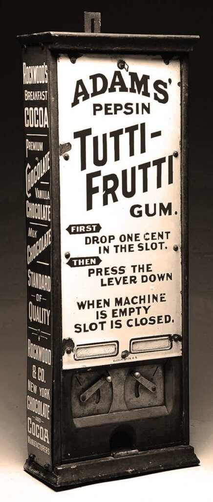

Un distributore automatico e' una macchina elettromeccanica composta da una scheda di controllo elettronica (che gestisce prezzi, selezioni e logica di funzionamento), un sistema di pagamento (monete, banconote, carte o contactless), un magazzino interno di prodotti organizzati in spirali, colonne o scomparti, e un meccanismo di erogazione azionato da motori o molle che, dopo la verifica del pagamento e della selezione, rilascia il prodotto nel vano di raccolta; e' inoltre dotato di sensori per controllare l'uscita del prodotto, eventuali blocchi o errori, e nei modelli moderni puo' includere refrigerazione, display digitali e connessione internet per monitoraggio remoto e gestione delle scorte. I distributori automatici rappresentano una soluzione pratica, moderna ed efficiente per soddisfare bisogni quotidiani in modo rapido e accessibile. Grazie all'innovazione tecnologica, offrono sempre piu' prodotti e servizi, garantendo disponibilita' continua, riduzione dei tempi di attesa e facilita' di utilizzo anche tramite pagamenti elettronici. In conclusione, sono una scelta versatile e in continua evoluzione, capace di migliorare l'esperienza degli utenti e ottimizzare i servizi. Adesso vedremo insieme la storia dei distributori automatici, dalle origini fino ai giorni nostri,con i quattro principali inventori di queste splendite macchine; e chi lo sa se in futuro ci saranno ancora nuove evoluzioni...cont'd!
La storia dei distributori automatici ha origini antichissime e si sviluppa attraverso secoli di innovazione tecnologica e ingegno umano. Il primo esempio documentato risale al I secolo d.C., quando l'ingegnere greco Erone di Alessandria progetto' un dispositivo capace di erogare acqua sacra nei templi in cambio di una moneta. Questo sistema e' considerato il primo distributore automatico della storia. Erone di Alessandria e' stato uno degli ingegneri e matematici piu' brillanti dell'antichita', vissuto probabilmente nel I secolo d.C. nella citta' di Alessandria d'Egitto, uno dei principali centri culturali del mondo ellenistico. Egli e' famoso per aver progettato una serie incredibile di macchine e dispositivi, molti dei quali sembrano anticipare tecnologie moderne, tra le quali, oltre al primo distributore automatico, troviamo: Eolipila (prima macchina a vapore), porte automatiche dei templi, fontana di Erone, automi e teatrini meccanici, odometro, diottra (strumento di misura).

Dopo un lungo periodo di assenza, il concetto fu' ripreso nel XIX secolo in Inghilterra. Nel 1883, l'inventore Percival Everitt sviluppo' uno dei primi distributori moderni per la vendita di cartoline e articoli stampati, installati nelle stazioni ferroviarie. Percival Everitt e' stato un inventore britannico attivo nella seconda meta' dell'Ottocento, noto appunto per aver sviluppato uno dei primi distributori automatici in Europa: la sua macchina a moneta, installata in luoghi pubblici come stazioni e uffici postali, erogava cartoline e francobolli in modo semplice e affidabile, contribuendo alla nascita della vendita automatica moderna.

Negli Stati Uniti, l'evoluzione continuo' rapidamente. Nel 1888, l'imprenditore Thomas Adams introdusse i primi distributori automatici di gomme da masticare nella metropolitana di New York. Thomas Adams e' stato un inventore e imprenditore statunitense (1818-1905), noto per aver sviluppato la gomma da masticare moderna e per aver contribuito alla diffusione dei distributori automatici negli Stati Uniti; inizialmente cercava di trasformare il lattice naturale (chicle) in gomma sintetica, ma falli' e ebbe l'idea di usarlo per creare chewing gum, che ebbe grande successo commerciale; nel 1888 installo' a New York alcuni dei primi distributori automatici americani, che vendevano gomme da masticare nelle stazioni della metropolitana, rendendo il prodotto facilmente accessibile; il suo lavoro segno' un passo importante nella nascita della vendita automatica di massa. Poco dopo, nel 1897, la Pulver Manufacturing Company sviluppo' distributori di caramelle con meccanismi animati per attirare i clienti.
